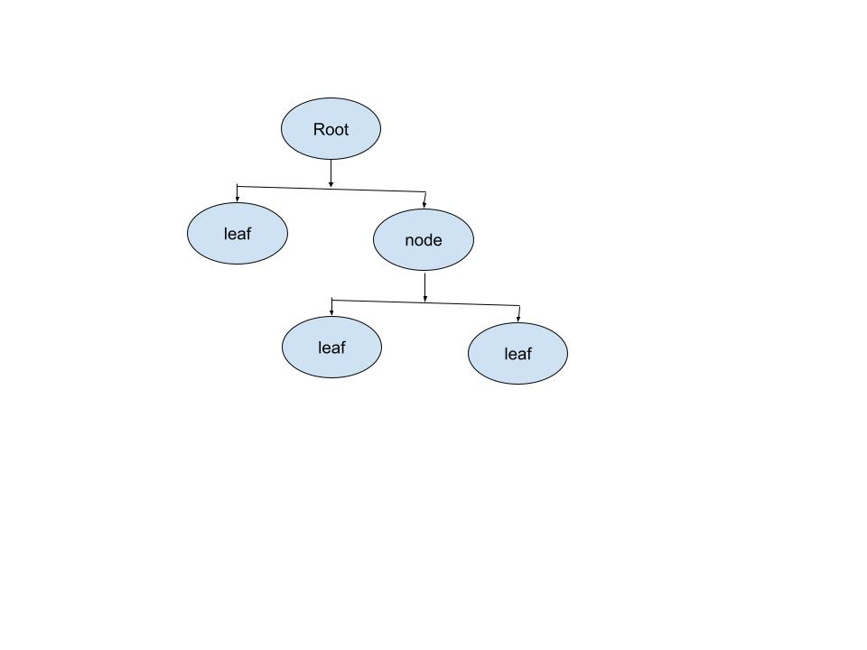
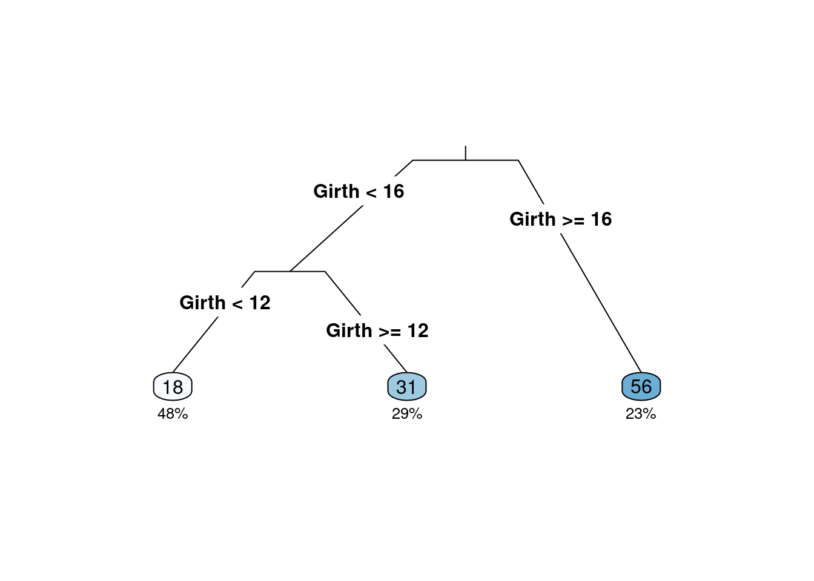
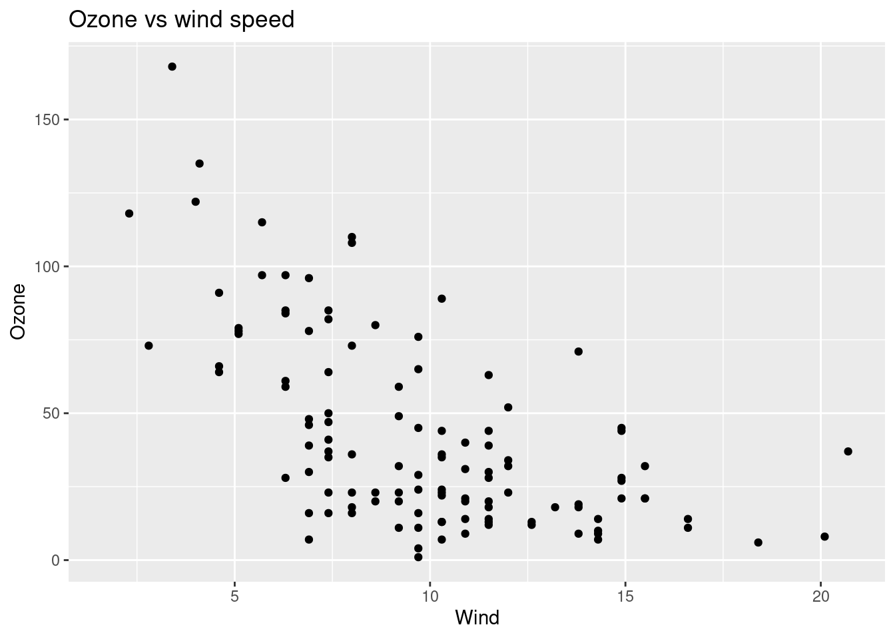
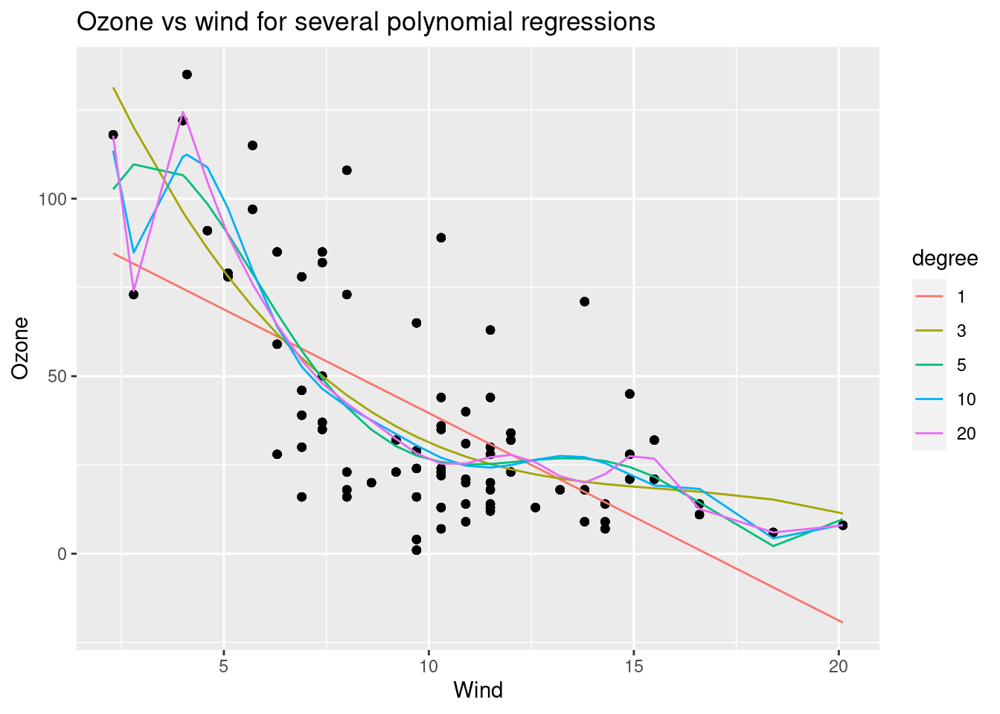
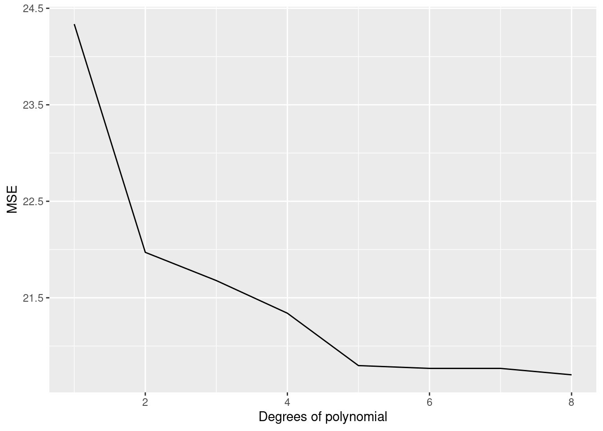
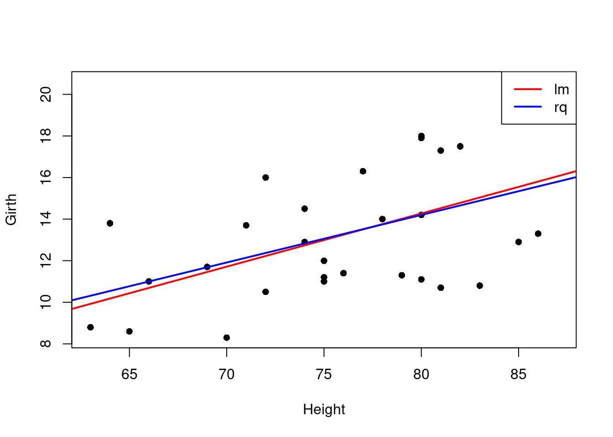

Chapter 5 有监督学习概论
5.0.1 机器学习
- 机器学习1959年由Arthur Samuel首次提出；
- 机器学习是研究计算机算法，这个算法可通过数据产生的经验自动地改善（Machine learning (ML) is the study of computer algorithms that can improve automatically through experience and by the use of data）（Mitchell,Tom，1959）
- 机器学习是计算机程序，如果该程序在T类任务中的表现，如P所衡量的，随着经验E的增加而提高，那么就可以说它从经验E中学习到了一些任务T和性能指标P。（A computer program is said to learn from experience E with respect to some class of tasks T and performance measure P if its performance at tasks in T, as measured by P, improves with experience E.）（Tom M. Mitchell ）
- 一系列的数据驱动的算法和工具，它的主要目的是根据观测到的数据来预测没有观测到的数据，它的最大特点就是数据驱动。
- 机器学习的种类:

machine learning
5.0.2 机器学习实例
房价预测：如何对房子的价格进行预测？采集与房子有关的变量：区域、房子朝向、楼层、周围是否有地铁、面积、房屋的价格等数据，构建一个回归模型来进行预测。\[y=f(X)+\epsilon\]
垃圾邮件分类：根据邮件内容提取出一些特征关键词作为X，而响应变量y为两个是值：1垃圾邮件，0好邮件，构建一个分类器进行邮件分类。\[C(x)=P(y=1|X)\]
我们做过的舆情分析案例（聚类分析）：使用评论数据，通过词向量技术解析得到词向量，然后进行主题分析，得到网络谣言、疫情趋势、地点（国外）、处罚、疫苗等主题，从而根据这些主题词来识别谣言。
强化学习:玩Super Mario Bros游戏
ReinforcementLearning
5.1 模型及拟合
- 模型：人们对所关心的真实世界问题的一个近似描述。
Model
决策树模型：是一种有监督学习的算法，使用一系列的是和否规则（if-then rules)来进行决策，和人进行决策的过程类似。 
- 数据：
# install.packages{"rpart"}
# install.packages{"rattle"}
# install.packages{"partykit"}
library(rpart)
library(rpart.plot)
library(rattle)## Loading required package: tibble## Loading required package: bitops## Rattle: A free graphical interface for data science with R.
## Version 5.5.1 Copyright (c) 2006-2021 Togaware Pty Ltd.
## Type 'rattle()' to shake, rattle, and roll your data.library(partykit)## Loading required package: grid## Loading required package: libcoin## Loading required package: mvtnorm# inpput the file
data(trees)
head(trees)## Girth Height Volume
## 1 8.3 70 10.3
## 2 8.6 65 10.3
## 3 8.8 63 10.2
## 4 10.5 72 16.4
## 5 10.7 81 18.8
## 6 10.8 83 19.7volume <- rpart(Volume ~ ., data = trees)
rpart.plot(volume, type = 3, clip.right.labs = FALSE, branch = .3, under = TRUE)
df <- read.csv("./data/simple4.csv")
df## sex haircol skirt style
## 1 F yellow y n
## 2 F black y n
## 3 F yellow n y
## 4 F black n y
## 5 M yellow n n
## 6 M black n n
## 7 M yellow y n
## 8 F black n y
## 9 M yellow n n
## 10 F black y n
## 11 M black y y
## 12 F yellow n y#sex <- factor(df$sex, levels = 0:1, labels = c("M", "F"))
#haircol <- factor(df$haircol,levels = 0:1, labels = c("yellow", "black"))
#skirt <- factor(df$skirt,levels = 0:1, labels = c("y", "n"))
#style <- factor(df$style,levels = 0:1, labels = c("y", "n"))
#df[] <- lapply(df,factor)
#str(df)
#output.tree<- rpart(sex~.,data=df,cp=0.02)
#print(output.tree)
#rpart.plot(output.tree)3.节点纯度的度量：Gini系数和熵 + 也称Gini不纯度，当随机选择一个特征，这个特定特征的总概率的计算（Gini Index, also known as Gini impurity, calculates the amount of probability of a specific feature that is classified incorrectly when selected randomly）. \[GiniIndex=1-\sum\limits_{i=1}^kp_i^2\] + 是数据不纯度或随机性的测度（it is the measurement of the impurity or randomness in the data points）. \[Entropy=-\sum\limits_{i=1}^kp_i\times log(p_i)\] + 不同的决策树算法使用不同的计算方法，CART树使用Gini系数，ID3和C4.5算法使用熵。（Different decision tree algorithms utilize different impurity metrics: CART uses Gini; ID3 and C4.5 use Entropy).
4.决策树例子
decisiontree <- data.frame(emotion=c('sick','sick','sick','notsick','notsick','sick','notsick','notsick'),
temperature=c('under','over','under','under','over','over','under','over'),
stayhome=c('N','Y','Y','N','Y','N','N','Y'))
decisiontree## emotion temperature stayhome
## 1 sick under N
## 2 sick over Y
## 3 sick under Y
## 4 notsick under N
## 5 notsick over Y
## 6 sick over N
## 7 notsick under N
## 8 notsick over Y计算步骤：
- 选择stayhome作为因变量y,emotion和temperature作为自变量\(x_1,x_2\);
- 首先计算根结点的GiniIndex：\(GiniIndex_r=\frac{1}{2}\);
- 随机选择一个变量，如\(x_2\)进行根结点裂分，分别计算左节点(condition为True)的Gini系数\(GiniIndex_1=\frac{3}{8}\)和右节点(condition为False)的Gini系数\(GiniIndex_2=\frac{3}{8}\)，然后计算加权的GiniIndex\(GiniIndex_w=\frac{3}{8}\times\frac{4}{8}+\frac{3}{8}\times\frac{4}{8}=\frac{1}{2}\),最后计算使用\(x_2\)进行根结点裂分得到的基尼不纯度的降低值\(GiniIndex_r-GiniIndex_w=\frac{1}{2}-\frac{3}{8}=\frac{1}{8}\);
- 根据上述过程选择另一个变量(\(x_1\))，进行类似的计算得到的基尼不纯度的降低值为0
- 所以第一轮选择\(x_2\)进行裂分。
使用信息熵的方法进行相似的计算。
5.预测值、拟合值及误判率
- 如果用训练得到的模型作用于一个(也有这几个自变量的) 数据, 那么就会得到预测值(predicted value).
- 对于训练模型的训练集做预测所得到的预测值也称为拟合值(fitted value).
- 使用训练模型的训练集会产生一个误判, 这实际上是用训练集“学习到” 的模型对训练集的因变量sex做预测。
- 混淆矩阵(confusion Matrix)是机器学习用来衡量分类好坏的方法（Confusion Matrix is a performance measurement for machine learning classification）.
 6.过拟合
6.过拟合
- 机器学习的目的是得到一个泛化误差比较小的模型；
- 如果用训练集所得到的误判率和用非训练集(或测试集) 得到的误判率之间差别很大, 则说明该模型有过拟合现象(overfitting).
- 在大数据时代，过拟合是模型构建过程中最易出现的情况，得到的模型是一个看上去很好，而实际上无用的模型。
- 简单来说就是模型在训练集上得到的误差非常小（偏差较小）而在不同数据集之间得到的误差非常大（方差较大），而模型总的误差基本由偏差和方差组成。
- 例子：买家秀和卖家秀；
###Overfitting
require(data.table)## Loading required package: data.tablelibrary(rpart)
require(ggplot2)## Loading required package: ggplot2set.seed(456)
##Reading data
overfitting_data=data.table(airquality)
ggplot(overfitting_data,aes(Wind,Ozone))+geom_point()+ggtitle("Ozone vs wind speed")## Warning: Removed 37 rows containing missing values (geom_point).
data_test=na.omit(overfitting_data[,.(Wind,Ozone)])
train_sample=sample(1:nrow(data_test),size = 0.7*nrow(data_test))
###creation of polynomial models
degree_of_poly=1:20
degree_to_plot=c(1,3,5,10,20)
polynomial_model=list()
df_result=NULL
for (degree in degree_of_poly)
{
fm=as.formula(paste0("Ozone~poly(Wind,",degree,",raw=T)"))
polynomial_model=c(polynomial_model,list(lm(fm,data_test[train_sample])))
Polynomial_degree=paste0(degree)
data_fitted=tail(polynomial_model,1)[[1]]$fitted.values
new_df=data.table(Wind=data_test[train_sample,Wind],Ozone_real=data_test[train_sample,Ozone],Ozone_fitted=tail(polynomial_model,1)[[1]]$fitted.values,degree=as.factor(degree))
if (is.null(df_result))
df_result=new_df
else
df_result=rbind(df_result,new_df)
}
gg=ggplot(df_result[degree%in%degree_to_plot],aes(x=Wind))+geom_point(aes(y=Ozone_real))+geom_line(aes(color=degree,y=Ozone_fitted))
gg+ggtitle('Ozone vs wind for several polynomial regressions')+ylab('Ozone')
###Computing SE
SE_train_list=c()
SE_test_list=c()
for (poly_mod in polynomial_model)
{
print(summary(poly_mod))
SE_train_list=c(SE_train_list,sqrt(mean(poly_mod$residuals^2)))
SE_test=sqrt(mean((data_test[-train_sample]-predict(poly_mod,data_test[-train_sample,]))^2))
SE_test_list=c(SE_test_list,SE_test)
}##
## Call:
## lm(formula = fm, data = data_test[train_sample])
##
## Residuals:
## Min 1Q Median 3Q Max
## -41.713 -17.792 -3.344 15.472 60.929
##
## Coefficients:
## Estimate Std. Error t value Pr(>|t|)
## (Intercept) 98.0237 8.4012 11.67 < 2e-16 ***
## poly(Wind, 1, raw = T) -5.8422 0.7842 -7.45 1.02e-10 ***
## ---
## Signif. codes: 0 '***' 0.001 '**' 0.01 '*' 0.05 '.' 0.1 ' ' 1
##
## Residual standard error: 24.64 on 79 degrees of freedom
## Multiple R-squared: 0.4127, Adjusted R-squared: 0.4052
## F-statistic: 55.5 on 1 and 79 DF, p-value: 1.019e-10## Warning in mean.default((data_test[-train_sample] - predict(poly_mod,
## data_test[-train_sample, : argument is not numeric or logical: returning NA##
## Call:
## lm(formula = fm, data = data_test[train_sample])
##
## Residuals:
## Min 1Q Median 3Q Max
## -42.19 -14.61 -4.92 12.24 60.33
##
## Coefficients:
## Estimate Std. Error t value Pr(>|t|)
## (Intercept) 157.5771 16.0821 9.798 3.08e-15 ***
## poly(Wind, 2, raw = T)1 -18.5808 3.1105 -5.974 6.52e-08 ***
## poly(Wind, 2, raw = T)2 0.6053 0.1439 4.207 6.85e-05 ***
## ---
## Signif. codes: 0 '***' 0.001 '**' 0.01 '*' 0.05 '.' 0.1 ' ' 1
##
## Residual standard error: 22.39 on 78 degrees of freedom
## Multiple R-squared: 0.5213, Adjusted R-squared: 0.509
## F-statistic: 42.47 on 2 and 78 DF, p-value: 3.334e-13## Warning in mean.default((data_test[-train_sample] - predict(poly_mod,
## data_test[-train_sample, : argument is not numeric or logical: returning NA##
## Call:
## lm(formula = fm, data = data_test[train_sample])
##
## Residuals:
## Min 1Q Median 3Q Max
## -47.103 -13.038 -3.920 9.021 63.362
##
## Coefficients:
## Estimate Std. Error t value Pr(>|t|)
## (Intercept) 194.34698 30.01711 6.475 8.07e-09 ***
## poly(Wind, 3, raw = T)1 -31.63124 9.53487 -3.317 0.00139 **
## poly(Wind, 3, raw = T)2 1.94131 0.93449 2.077 0.04110 *
## poly(Wind, 3, raw = T)3 -0.04083 0.02822 -1.447 0.15203
## ---
## Signif. codes: 0 '***' 0.001 '**' 0.01 '*' 0.05 '.' 0.1 ' ' 1
##
## Residual standard error: 22.23 on 77 degrees of freedom
## Multiple R-squared: 0.534, Adjusted R-squared: 0.5158
## F-statistic: 29.41 on 3 and 77 DF, p-value: 8.961e-13## Warning in mean.default((data_test[-train_sample] - predict(poly_mod,
## data_test[-train_sample, : argument is not numeric or logical: returning NA##
## Call:
## lm(formula = fm, data = data_test[train_sample])
##
## Residuals:
## Min 1Q Median 3Q Max
## -42.262 -13.526 -3.561 10.257 62.494
##
## Coefficients:
## Estimate Std. Error t value Pr(>|t|)
## (Intercept) 126.319188 52.823584 2.391 0.0193 *
## poly(Wind, 4, raw = T)1 3.550616 24.473809 0.145 0.8850
## poly(Wind, 4, raw = T)2 -3.918866 3.872884 -1.012 0.3148
## poly(Wind, 4, raw = T)3 0.346829 0.250332 1.385 0.1700
## poly(Wind, 4, raw = T)4 -0.008786 0.005638 -1.558 0.1233
## ---
## Signif. codes: 0 '***' 0.001 '**' 0.01 '*' 0.05 '.' 0.1 ' ' 1
##
## Residual standard error: 22.03 on 76 degrees of freedom
## Multiple R-squared: 0.5484, Adjusted R-squared: 0.5246
## F-statistic: 23.07 on 4 and 76 DF, p-value: 1.661e-12## Warning in mean.default((data_test[-train_sample] - predict(poly_mod,
## data_test[-train_sample, : argument is not numeric or logical: returning NA##
## Call:
## lm(formula = fm, data = data_test[train_sample])
##
## Residuals:
## Min 1Q Median 3Q Max
## -41.18 -12.81 -3.65 10.19 66.73
##
## Coefficients:
## Estimate Std. Error t value Pr(>|t|)
## (Intercept) -47.642955 101.574573 -0.469 0.6404
## poly(Wind, 5, raw = T)1 124.900947 65.499114 1.907 0.0604 .
## poly(Wind, 5, raw = T)2 -33.043592 15.111328 -2.187 0.0319 *
## poly(Wind, 5, raw = T)3 3.465855 1.585451 2.186 0.0319 *
## poly(Wind, 5, raw = T)4 -0.161312 0.076795 -2.101 0.0390 *
## poly(Wind, 5, raw = T)5 0.002768 0.001390 1.991 0.0501 .
## ---
## Signif. codes: 0 '***' 0.001 '**' 0.01 '*' 0.05 '.' 0.1 ' ' 1
##
## Residual standard error: 21.61 on 75 degrees of freedom
## Multiple R-squared: 0.5711, Adjusted R-squared: 0.5425
## F-statistic: 19.97 on 5 and 75 DF, p-value: 1.322e-12## Warning in mean.default((data_test[-train_sample] - predict(poly_mod,
## data_test[-train_sample, : argument is not numeric or logical: returning NA##
## Call:
## lm(formula = fm, data = data_test[train_sample])
##
## Residuals:
## Min 1Q Median 3Q Max
## -40.219 -13.286 -4.391 9.609 67.543
##
## Coefficients:
## Estimate Std. Error t value Pr(>|t|)
## (Intercept) -1.226e+02 1.936e+02 -0.633 0.528
## poly(Wind, 6, raw = T)1 1.884e+02 1.541e+02 1.222 0.225
## poly(Wind, 6, raw = T)2 -5.271e+01 4.573e+01 -1.153 0.253
## poly(Wind, 6, raw = T)3 6.398e+00 6.626e+00 0.966 0.337
## poly(Wind, 6, raw = T)4 -3.880e-01 5.031e-01 -0.771 0.443
## poly(Wind, 6, raw = T)5 1.150e-02 1.919e-02 0.599 0.551
## poly(Wind, 6, raw = T)6 -1.321e-04 2.897e-04 -0.456 0.650
##
## Residual standard error: 21.73 on 74 degrees of freedom
## Multiple R-squared: 0.5723, Adjusted R-squared: 0.5376
## F-statistic: 16.5 on 6 and 74 DF, p-value: 5.696e-12## Warning in mean.default((data_test[-train_sample] - predict(poly_mod,
## data_test[-train_sample, : argument is not numeric or logical: returning NA##
## Call:
## lm(formula = fm, data = data_test[train_sample])
##
## Residuals:
## Min 1Q Median 3Q Max
## -40.181 -13.217 -4.417 9.583 67.517
##
## Coefficients:
## Estimate Std. Error t value Pr(>|t|)
## (Intercept) -1.308e+02 4.205e+02 -0.311 0.757
## poly(Wind, 7, raw = T)1 1.966e+02 4.059e+02 0.484 0.630
## poly(Wind, 7, raw = T)2 -5.585e+01 1.516e+02 -0.368 0.714
## poly(Wind, 7, raw = T)3 7.010e+00 2.892e+01 0.242 0.809
## poly(Wind, 7, raw = T)4 -4.540e-01 3.080e+00 -0.147 0.883
## poly(Wind, 7, raw = T)5 1.550e-02 1.850e-01 0.084 0.933
## poly(Wind, 7, raw = T)6 -2.590e-04 5.844e-03 -0.044 0.965
## poly(Wind, 7, raw = T)7 1.641e-06 7.546e-05 0.022 0.983
##
## Residual standard error: 21.88 on 73 degrees of freedom
## Multiple R-squared: 0.5723, Adjusted R-squared: 0.5313
## F-statistic: 13.95 on 7 and 73 DF, p-value: 2.446e-11## Warning in mean.default((data_test[-train_sample] - predict(poly_mod,
## data_test[-train_sample, : argument is not numeric or logical: returning NA##
## Call:
## lm(formula = fm, data = data_test[train_sample])
##
## Residuals:
## Min 1Q Median 3Q Max
## -40.324 -13.372 -5.533 8.916 69.196
##
## Coefficients:
## Estimate Std. Error t value Pr(>|t|)
## (Intercept) 4.254e+02 9.194e+02 0.463 0.645
## poly(Wind, 8, raw = T)1 -4.396e+02 1.019e+03 -0.431 0.668
## poly(Wind, 8, raw = T)2 2.331e+02 4.508e+02 0.517 0.607
## poly(Wind, 8, raw = T)3 -6.202e+01 1.055e+02 -0.588 0.558
## poly(Wind, 8, raw = T)4 9.144e+00 1.443e+01 0.634 0.528
## poly(Wind, 8, raw = T)5 -7.876e-01 1.194e+00 -0.660 0.512
## poly(Wind, 8, raw = T)6 3.953e-02 5.873e-02 0.673 0.503
## poly(Wind, 8, raw = T)7 -1.073e-03 1.579e-03 -0.679 0.499
## poly(Wind, 8, raw = T)8 1.216e-05 1.786e-05 0.681 0.498
##
## Residual standard error: 21.96 on 72 degrees of freedom
## Multiple R-squared: 0.575, Adjusted R-squared: 0.5278
## F-statistic: 12.18 on 8 and 72 DF, p-value: 7.728e-11## Warning in mean.default((data_test[-train_sample] - predict(poly_mod,
## data_test[-train_sample, : argument is not numeric or logical: returning NA##
## Call:
## lm(formula = fm, data = data_test[train_sample])
##
## Residuals:
## Min 1Q Median 3Q Max
## -39.191 -14.464 -5.251 8.702 69.369
##
## Coefficients:
## Estimate Std. Error t value Pr(>|t|)
## (Intercept) 2.187e+03 1.881e+03 1.162 0.249
## poly(Wind, 9, raw = T)1 -2.722e+03 2.358e+03 -1.154 0.252
## poly(Wind, 9, raw = T)2 1.443e+03 1.215e+03 1.188 0.239
## poly(Wind, 9, raw = T)3 -4.100e+02 3.411e+02 -1.202 0.233
## poly(Wind, 9, raw = T)4 6.943e+01 5.801e+01 1.197 0.235
## poly(Wind, 9, raw = T)5 -7.358e+00 6.239e+00 -1.179 0.242
## poly(Wind, 9, raw = T)6 4.928e-01 4.265e-01 1.155 0.252
## poly(Wind, 9, raw = T)7 -2.026e-02 1.796e-02 -1.128 0.263
## poly(Wind, 9, raw = T)8 4.667e-04 4.241e-04 1.101 0.275
## poly(Wind, 9, raw = T)9 -4.609e-06 4.296e-06 -1.073 0.287
##
## Residual standard error: 21.93 on 71 degrees of freedom
## Multiple R-squared: 0.5818, Adjusted R-squared: 0.5288
## F-statistic: 10.97 on 9 and 71 DF, p-value: 1.659e-10## Warning in mean.default((data_test[-train_sample] - predict(poly_mod,
## data_test[-train_sample, : argument is not numeric or logical: returning NA##
## Call:
## lm(formula = fm, data = data_test[train_sample])
##
## Residuals:
## Min 1Q Median 3Q Max
## -36.654 -13.654 -4.266 8.975 66.521
##
## Coefficients:
## Estimate Std. Error t value Pr(>|t|)
## (Intercept) 5.719e+03 3.949e+03 1.448 0.152
## poly(Wind, 10, raw = T)1 -7.913e+03 5.623e+03 -1.407 0.164
## poly(Wind, 10, raw = T)2 4.640e+03 3.369e+03 1.377 0.173
## poly(Wind, 10, raw = T)3 -1.501e+03 1.126e+03 -1.334 0.187
## poly(Wind, 10, raw = T)4 2.994e+02 2.334e+02 1.283 0.204
## poly(Wind, 10, raw = T)5 -3.879e+01 3.153e+01 -1.230 0.223
## poly(Wind, 10, raw = T)6 3.330e+00 2.822e+00 1.180 0.242
## poly(Wind, 10, raw = T)7 -1.880e-01 1.659e-01 -1.133 0.261
## poly(Wind, 10, raw = T)8 6.713e-03 6.157e-03 1.090 0.279
## poly(Wind, 10, raw = T)9 -1.373e-04 1.306e-04 -1.052 0.297
## poly(Wind, 10, raw = T)10 1.226e-06 1.206e-06 1.017 0.313
##
## Residual standard error: 21.93 on 70 degrees of freedom
## Multiple R-squared: 0.5879, Adjusted R-squared: 0.529
## F-statistic: 9.985 on 10 and 70 DF, p-value: 3.571e-10## Warning in mean.default((data_test[-train_sample] - predict(poly_mod,
## data_test[-train_sample, : argument is not numeric or logical: returning NA##
## Call:
## lm(formula = fm, data = data_test[train_sample])
##
## Residuals:
## Min 1Q Median 3Q Max
## -38.409 -13.059 -3.181 5.338 64.988
##
## Coefficients:
## Estimate Std. Error t value Pr(>|t|)
## (Intercept) 1.606e+04 7.917e+03 2.028 0.0464 *
## poly(Wind, 11, raw = T)1 -2.490e+04 1.260e+04 -1.975 0.0522 .
## poly(Wind, 11, raw = T)2 1.653e+04 8.591e+03 1.924 0.0584 .
## poly(Wind, 11, raw = T)3 -6.203e+03 3.322e+03 -1.867 0.0661 .
## poly(Wind, 11, raw = T)4 1.471e+03 8.131e+02 1.809 0.0749 .
## poly(Wind, 11, raw = T)5 -2.327e+02 1.328e+02 -1.752 0.0841 .
## poly(Wind, 11, raw = T)6 2.519e+01 1.481e+01 1.700 0.0936 .
## poly(Wind, 11, raw = T)7 -1.873e+00 1.133e+00 -1.652 0.1030
## poly(Wind, 11, raw = T)8 9.407e-02 5.846e-02 1.609 0.1122
## poly(Wind, 11, raw = T)9 -3.048e-03 1.942e-03 -1.570 0.1210
## poly(Wind, 11, raw = T)10 5.750e-05 3.747e-05 1.534 0.1295
## poly(Wind, 11, raw = T)11 -4.793e-07 3.190e-07 -1.502 0.1375
## ---
## Signif. codes: 0 '***' 0.001 '**' 0.01 '*' 0.05 '.' 0.1 ' ' 1
##
## Residual standard error: 21.73 on 69 degrees of freedom
## Multiple R-squared: 0.6009, Adjusted R-squared: 0.5373
## F-statistic: 9.446 on 11 and 69 DF, p-value: 4.25e-10## Warning in mean.default((data_test[-train_sample] - predict(poly_mod,
## data_test[-train_sample, : argument is not numeric or logical: returning NA##
## Call:
## lm(formula = fm, data = data_test[train_sample])
##
## Residuals:
## Min 1Q Median 3Q Max
## -38.409 -13.059 -3.181 5.338 64.988
##
## Coefficients: (1 not defined because of singularities)
## Estimate Std. Error t value Pr(>|t|)
## (Intercept) 1.606e+04 7.917e+03 2.028 0.0464 *
## poly(Wind, 12, raw = T)1 -2.490e+04 1.260e+04 -1.975 0.0522 .
## poly(Wind, 12, raw = T)2 1.653e+04 8.591e+03 1.924 0.0584 .
## poly(Wind, 12, raw = T)3 -6.203e+03 3.322e+03 -1.867 0.0661 .
## poly(Wind, 12, raw = T)4 1.471e+03 8.131e+02 1.809 0.0749 .
## poly(Wind, 12, raw = T)5 -2.327e+02 1.328e+02 -1.752 0.0841 .
## poly(Wind, 12, raw = T)6 2.519e+01 1.481e+01 1.700 0.0936 .
## poly(Wind, 12, raw = T)7 -1.873e+00 1.133e+00 -1.652 0.1030
## poly(Wind, 12, raw = T)8 9.407e-02 5.846e-02 1.609 0.1122
## poly(Wind, 12, raw = T)9 -3.048e-03 1.942e-03 -1.570 0.1210
## poly(Wind, 12, raw = T)10 5.750e-05 3.747e-05 1.534 0.1295
## poly(Wind, 12, raw = T)11 -4.793e-07 3.190e-07 -1.502 0.1375
## poly(Wind, 12, raw = T)12 NA NA NA NA
## ---
## Signif. codes: 0 '***' 0.001 '**' 0.01 '*' 0.05 '.' 0.1 ' ' 1
##
## Residual standard error: 21.73 on 69 degrees of freedom
## Multiple R-squared: 0.6009, Adjusted R-squared: 0.5373
## F-statistic: 9.446 on 11 and 69 DF, p-value: 4.25e-10## Warning in predict.lm(poly_mod, data_test[-train_sample, ]): prediction from a
## rank-deficient fit may be misleading## Warning in mean.default((data_test[-train_sample] - predict(poly_mod,
## data_test[-train_sample, : argument is not numeric or logical: returning NA##
## Call:
## lm(formula = fm, data = data_test[train_sample])
##
## Residuals:
## Min 1Q Median 3Q Max
## -38.775 -13.102 -3.242 5.758 65.355
##
## Coefficients: (1 not defined because of singularities)
## Estimate Std. Error t value Pr(>|t|)
## (Intercept) 1.848e+04 1.953e+04 0.946 0.347
## poly(Wind, 13, raw = T)1 -2.924e+04 3.441e+04 -0.850 0.398
## poly(Wind, 13, raw = T)2 1.990e+04 2.623e+04 0.759 0.451
## poly(Wind, 13, raw = T)3 -7.692e+03 1.146e+04 -0.671 0.504
## poly(Wind, 13, raw = T)4 1.892e+03 3.207e+03 0.590 0.557
## poly(Wind, 13, raw = T)5 -3.131e+02 6.067e+02 -0.516 0.608
## poly(Wind, 13, raw = T)6 3.583e+01 7.974e+01 0.449 0.655
## poly(Wind, 13, raw = T)7 -2.858e+00 7.340e+00 -0.389 0.698
## poly(Wind, 13, raw = T)8 1.573e-01 4.687e-01 0.335 0.738
## poly(Wind, 13, raw = T)9 -5.764e-03 2.009e-02 -0.287 0.775
## poly(Wind, 13, raw = T)10 1.298e-04 5.336e-04 0.243 0.809
## poly(Wind, 13, raw = T)11 -1.435e-06 7.039e-06 -0.204 0.839
## poly(Wind, 13, raw = T)12 NA NA NA NA
## poly(Wind, 13, raw = T)13 1.059e-10 7.791e-10 0.136 0.892
##
## Residual standard error: 21.89 on 68 degrees of freedom
## Multiple R-squared: 0.601, Adjusted R-squared: 0.5306
## F-statistic: 8.537 on 12 and 68 DF, p-value: 1.345e-09## Warning in predict.lm(poly_mod, data_test[-train_sample, ]): prediction from a
## rank-deficient fit may be misleading
## Warning in predict.lm(poly_mod, data_test[-train_sample, ]): argument is not
## numeric or logical: returning NA##
## Call:
## lm(formula = fm, data = data_test[train_sample])
##
## Residuals:
## Min 1Q Median 3Q Max
## -38.775 -13.102 -3.242 5.758 65.355
##
## Coefficients: (2 not defined because of singularities)
## Estimate Std. Error t value Pr(>|t|)
## (Intercept) 1.848e+04 1.953e+04 0.946 0.347
## poly(Wind, 14, raw = T)1 -2.924e+04 3.441e+04 -0.850 0.398
## poly(Wind, 14, raw = T)2 1.990e+04 2.623e+04 0.759 0.451
## poly(Wind, 14, raw = T)3 -7.692e+03 1.146e+04 -0.671 0.504
## poly(Wind, 14, raw = T)4 1.892e+03 3.207e+03 0.590 0.557
## poly(Wind, 14, raw = T)5 -3.131e+02 6.067e+02 -0.516 0.608
## poly(Wind, 14, raw = T)6 3.583e+01 7.974e+01 0.449 0.655
## poly(Wind, 14, raw = T)7 -2.858e+00 7.340e+00 -0.389 0.698
## poly(Wind, 14, raw = T)8 1.573e-01 4.687e-01 0.335 0.738
## poly(Wind, 14, raw = T)9 -5.764e-03 2.009e-02 -0.287 0.775
## poly(Wind, 14, raw = T)10 1.298e-04 5.336e-04 0.243 0.809
## poly(Wind, 14, raw = T)11 -1.435e-06 7.039e-06 -0.204 0.839
## poly(Wind, 14, raw = T)12 NA NA NA NA
## poly(Wind, 14, raw = T)13 1.059e-10 7.791e-10 0.136 0.892
## poly(Wind, 14, raw = T)14 NA NA NA NA
##
## Residual standard error: 21.89 on 68 degrees of freedom
## Multiple R-squared: 0.601, Adjusted R-squared: 0.5306
## F-statistic: 8.537 on 12 and 68 DF, p-value: 1.345e-09## Warning in predict.lm(poly_mod, data_test[-train_sample, ]): prediction from a
## rank-deficient fit may be misleading
## Warning in predict.lm(poly_mod, data_test[-train_sample, ]): argument is not
## numeric or logical: returning NA##
## Call:
## lm(formula = fm, data = data_test[train_sample])
##
## Residuals:
## Min 1Q Median 3Q Max
## -39.065 -12.815 -3.778 5.350 65.972
##
## Coefficients: (2 not defined because of singularities)
## Estimate Std. Error t value Pr(>|t|)
## (Intercept) 3.007e+04 4.803e+04 0.626 0.533
## poly(Wind, 15, raw = T)1 -5.152e+04 9.105e+04 -0.566 0.573
## poly(Wind, 15, raw = T)2 3.857e+04 7.539e+04 0.512 0.611
## poly(Wind, 15, raw = T)3 -1.675e+04 3.615e+04 -0.463 0.645
## poly(Wind, 15, raw = T)4 4.734e+03 1.122e+04 0.422 0.674
## poly(Wind, 15, raw = T)5 -9.226e+02 2.384e+03 -0.387 0.700
## poly(Wind, 15, raw = T)6 1.277e+02 3.566e+02 0.358 0.721
## poly(Wind, 15, raw = T)7 -1.270e+01 3.794e+01 -0.335 0.739
## poly(Wind, 15, raw = T)8 9.013e-01 2.852e+00 0.316 0.753
## poly(Wind, 15, raw = T)9 -4.433e-02 1.472e-01 -0.301 0.764
## poly(Wind, 15, raw = T)10 1.405e-03 4.852e-03 0.290 0.773
## poly(Wind, 15, raw = T)11 -2.327e-05 8.284e-05 -0.281 0.780
## poly(Wind, 15, raw = T)12 NA NA NA NA
## poly(Wind, 15, raw = T)13 5.318e-09 1.972e-08 0.270 0.788
## poly(Wind, 15, raw = T)14 NA NA NA NA
## poly(Wind, 15, raw = T)15 -1.260e-12 4.764e-12 -0.265 0.792
##
## Residual standard error: 22.04 on 67 degrees of freedom
## Multiple R-squared: 0.6015, Adjusted R-squared: 0.5241
## F-statistic: 7.778 on 13 and 67 DF, p-value: 3.949e-09## Warning in predict.lm(poly_mod, data_test[-train_sample, ]): prediction from a
## rank-deficient fit may be misleading
## Warning in predict.lm(poly_mod, data_test[-train_sample, ]): argument is not
## numeric or logical: returning NA##
## Call:
## lm(formula = fm, data = data_test[train_sample])
##
## Residuals:
## Min 1Q Median 3Q Max
## -39.065 -12.815 -3.778 5.350 65.972
##
## Coefficients: (3 not defined because of singularities)
## Estimate Std. Error t value Pr(>|t|)
## (Intercept) 3.007e+04 4.803e+04 0.626 0.533
## poly(Wind, 16, raw = T)1 -5.152e+04 9.105e+04 -0.566 0.573
## poly(Wind, 16, raw = T)2 3.857e+04 7.539e+04 0.512 0.611
## poly(Wind, 16, raw = T)3 -1.675e+04 3.615e+04 -0.463 0.645
## poly(Wind, 16, raw = T)4 4.734e+03 1.122e+04 0.422 0.674
## poly(Wind, 16, raw = T)5 -9.226e+02 2.384e+03 -0.387 0.700
## poly(Wind, 16, raw = T)6 1.277e+02 3.566e+02 0.358 0.721
## poly(Wind, 16, raw = T)7 -1.270e+01 3.794e+01 -0.335 0.739
## poly(Wind, 16, raw = T)8 9.013e-01 2.852e+00 0.316 0.753
## poly(Wind, 16, raw = T)9 -4.433e-02 1.472e-01 -0.301 0.764
## poly(Wind, 16, raw = T)10 1.405e-03 4.852e-03 0.290 0.773
## poly(Wind, 16, raw = T)11 -2.327e-05 8.284e-05 -0.281 0.780
## poly(Wind, 16, raw = T)12 NA NA NA NA
## poly(Wind, 16, raw = T)13 5.318e-09 1.972e-08 0.270 0.788
## poly(Wind, 16, raw = T)14 NA NA NA NA
## poly(Wind, 16, raw = T)15 -1.260e-12 4.764e-12 -0.265 0.792
## poly(Wind, 16, raw = T)16 NA NA NA NA
##
## Residual standard error: 22.04 on 67 degrees of freedom
## Multiple R-squared: 0.6015, Adjusted R-squared: 0.5241
## F-statistic: 7.778 on 13 and 67 DF, p-value: 3.949e-09## Warning in predict.lm(poly_mod, data_test[-train_sample, ]): prediction from a
## rank-deficient fit may be misleading
## Warning in predict.lm(poly_mod, data_test[-train_sample, ]): argument is not
## numeric or logical: returning NA##
## Call:
## lm(formula = fm, data = data_test[train_sample])
##
## Residuals:
## Min 1Q Median 3Q Max
## -39.065 -12.815 -3.778 5.350 65.972
##
## Coefficients: (4 not defined because of singularities)
## Estimate Std. Error t value Pr(>|t|)
## (Intercept) 3.007e+04 4.803e+04 0.626 0.533
## poly(Wind, 17, raw = T)1 -5.152e+04 9.105e+04 -0.566 0.573
## poly(Wind, 17, raw = T)2 3.857e+04 7.539e+04 0.512 0.611
## poly(Wind, 17, raw = T)3 -1.675e+04 3.615e+04 -0.463 0.645
## poly(Wind, 17, raw = T)4 4.734e+03 1.122e+04 0.422 0.674
## poly(Wind, 17, raw = T)5 -9.226e+02 2.384e+03 -0.387 0.700
## poly(Wind, 17, raw = T)6 1.277e+02 3.566e+02 0.358 0.721
## poly(Wind, 17, raw = T)7 -1.270e+01 3.794e+01 -0.335 0.739
## poly(Wind, 17, raw = T)8 9.013e-01 2.852e+00 0.316 0.753
## poly(Wind, 17, raw = T)9 -4.433e-02 1.472e-01 -0.301 0.764
## poly(Wind, 17, raw = T)10 1.405e-03 4.852e-03 0.290 0.773
## poly(Wind, 17, raw = T)11 -2.327e-05 8.284e-05 -0.281 0.780
## poly(Wind, 17, raw = T)12 NA NA NA NA
## poly(Wind, 17, raw = T)13 5.318e-09 1.972e-08 0.270 0.788
## poly(Wind, 17, raw = T)14 NA NA NA NA
## poly(Wind, 17, raw = T)15 -1.260e-12 4.764e-12 -0.265 0.792
## poly(Wind, 17, raw = T)16 NA NA NA NA
## poly(Wind, 17, raw = T)17 NA NA NA NA
##
## Residual standard error: 22.04 on 67 degrees of freedom
## Multiple R-squared: 0.6015, Adjusted R-squared: 0.5241
## F-statistic: 7.778 on 13 and 67 DF, p-value: 3.949e-09## Warning in predict.lm(poly_mod, data_test[-train_sample, ]): prediction from a
## rank-deficient fit may be misleading
## Warning in predict.lm(poly_mod, data_test[-train_sample, ]): argument is not
## numeric or logical: returning NA##
## Call:
## lm(formula = fm, data = data_test[train_sample])
##
## Residuals:
## Min 1Q Median 3Q Max
## -38.476 -12.354 -3.806 5.584 65.707
##
## Coefficients: (4 not defined because of singularities)
## Estimate Std. Error t value Pr(>|t|)
## (Intercept) 8.313e+04 1.232e+05 0.675 0.502
## poly(Wind, 18, raw = T)1 -1.587e+05 2.467e+05 -0.643 0.522
## poly(Wind, 18, raw = T)2 1.339e+05 2.172e+05 0.616 0.540
## poly(Wind, 18, raw = T)3 -6.616e+04 1.117e+05 -0.593 0.555
## poly(Wind, 18, raw = T)4 2.144e+04 3.744e+04 0.573 0.569
## poly(Wind, 18, raw = T)5 -4.818e+03 8.661e+03 -0.556 0.580
## poly(Wind, 18, raw = T)6 7.723e+02 1.423e+03 0.543 0.589
## poly(Wind, 18, raw = T)7 -8.921e+01 1.679e+02 -0.531 0.597
## poly(Wind, 18, raw = T)8 7.379e+00 1.413e+01 0.522 0.603
## poly(Wind, 18, raw = T)9 -4.250e-01 8.266e-01 -0.514 0.609
## poly(Wind, 18, raw = T)10 1.589e-02 3.132e-02 0.507 0.614
## poly(Wind, 18, raw = T)11 -3.133e-04 6.252e-04 -0.501 0.618
## poly(Wind, 18, raw = T)12 NA NA NA NA
## poly(Wind, 18, raw = T)13 1.074e-07 2.189e-07 0.490 0.625
## poly(Wind, 18, raw = T)14 NA NA NA NA
## poly(Wind, 18, raw = T)15 -4.475e-11 9.304e-11 -0.481 0.632
## poly(Wind, 18, raw = T)16 NA NA NA NA
## poly(Wind, 18, raw = T)17 NA NA NA NA
## poly(Wind, 18, raw = T)18 3.106e-16 6.637e-16 0.468 0.641
##
## Residual standard error: 22.17 on 66 degrees of freedom
## Multiple R-squared: 0.6028, Adjusted R-squared: 0.5185
## F-statistic: 7.154 on 14 and 66 DF, p-value: 1.035e-08## Warning in predict.lm(poly_mod, data_test[-train_sample, ]): prediction from a
## rank-deficient fit may be misleading
## Warning in predict.lm(poly_mod, data_test[-train_sample, ]): argument is not
## numeric or logical: returning NA##
## Call:
## lm(formula = fm, data = data_test[train_sample])
##
## Residuals:
## Min 1Q Median 3Q Max
## -38.476 -12.354 -3.806 5.584 65.707
##
## Coefficients: (5 not defined because of singularities)
## Estimate Std. Error t value Pr(>|t|)
## (Intercept) 8.313e+04 1.232e+05 0.675 0.502
## poly(Wind, 19, raw = T)1 -1.587e+05 2.467e+05 -0.643 0.522
## poly(Wind, 19, raw = T)2 1.339e+05 2.172e+05 0.616 0.540
## poly(Wind, 19, raw = T)3 -6.616e+04 1.117e+05 -0.593 0.555
## poly(Wind, 19, raw = T)4 2.144e+04 3.744e+04 0.573 0.569
## poly(Wind, 19, raw = T)5 -4.818e+03 8.661e+03 -0.556 0.580
## poly(Wind, 19, raw = T)6 7.723e+02 1.423e+03 0.543 0.589
## poly(Wind, 19, raw = T)7 -8.921e+01 1.679e+02 -0.531 0.597
## poly(Wind, 19, raw = T)8 7.379e+00 1.413e+01 0.522 0.603
## poly(Wind, 19, raw = T)9 -4.250e-01 8.266e-01 -0.514 0.609
## poly(Wind, 19, raw = T)10 1.589e-02 3.132e-02 0.507 0.614
## poly(Wind, 19, raw = T)11 -3.133e-04 6.252e-04 -0.501 0.618
## poly(Wind, 19, raw = T)12 NA NA NA NA
## poly(Wind, 19, raw = T)13 1.074e-07 2.189e-07 0.490 0.625
## poly(Wind, 19, raw = T)14 NA NA NA NA
## poly(Wind, 19, raw = T)15 -4.475e-11 9.304e-11 -0.481 0.632
## poly(Wind, 19, raw = T)16 NA NA NA NA
## poly(Wind, 19, raw = T)17 NA NA NA NA
## poly(Wind, 19, raw = T)18 3.106e-16 6.637e-16 0.468 0.641
## poly(Wind, 19, raw = T)19 NA NA NA NA
##
## Residual standard error: 22.17 on 66 degrees of freedom
## Multiple R-squared: 0.6028, Adjusted R-squared: 0.5185
## F-statistic: 7.154 on 14 and 66 DF, p-value: 1.035e-08## Warning in predict.lm(poly_mod, data_test[-train_sample, ]): prediction from a
## rank-deficient fit may be misleading
## Warning in predict.lm(poly_mod, data_test[-train_sample, ]): argument is not
## numeric or logical: returning NA##
## Call:
## lm(formula = fm, data = data_test[train_sample])
##
## Residuals:
## Min 1Q Median 3Q Max
## -38.476 -12.354 -3.806 5.584 65.707
##
## Coefficients: (6 not defined because of singularities)
## Estimate Std. Error t value Pr(>|t|)
## (Intercept) 8.313e+04 1.232e+05 0.675 0.502
## poly(Wind, 20, raw = T)1 -1.587e+05 2.467e+05 -0.643 0.522
## poly(Wind, 20, raw = T)2 1.339e+05 2.172e+05 0.616 0.540
## poly(Wind, 20, raw = T)3 -6.616e+04 1.117e+05 -0.593 0.555
## poly(Wind, 20, raw = T)4 2.144e+04 3.744e+04 0.573 0.569
## poly(Wind, 20, raw = T)5 -4.818e+03 8.661e+03 -0.556 0.580
## poly(Wind, 20, raw = T)6 7.723e+02 1.423e+03 0.543 0.589
## poly(Wind, 20, raw = T)7 -8.921e+01 1.679e+02 -0.531 0.597
## poly(Wind, 20, raw = T)8 7.379e+00 1.413e+01 0.522 0.603
## poly(Wind, 20, raw = T)9 -4.250e-01 8.266e-01 -0.514 0.609
## poly(Wind, 20, raw = T)10 1.589e-02 3.132e-02 0.507 0.614
## poly(Wind, 20, raw = T)11 -3.133e-04 6.252e-04 -0.501 0.618
## poly(Wind, 20, raw = T)12 NA NA NA NA
## poly(Wind, 20, raw = T)13 1.074e-07 2.189e-07 0.490 0.625
## poly(Wind, 20, raw = T)14 NA NA NA NA
## poly(Wind, 20, raw = T)15 -4.475e-11 9.304e-11 -0.481 0.632
## poly(Wind, 20, raw = T)16 NA NA NA NA
## poly(Wind, 20, raw = T)17 NA NA NA NA
## poly(Wind, 20, raw = T)18 3.106e-16 6.637e-16 0.468 0.641
## poly(Wind, 20, raw = T)19 NA NA NA NA
## poly(Wind, 20, raw = T)20 NA NA NA NA
##
## Residual standard error: 22.17 on 66 degrees of freedom
## Multiple R-squared: 0.6028, Adjusted R-squared: 0.5185
## F-statistic: 7.154 on 14 and 66 DF, p-value: 1.035e-08## Warning in predict.lm(poly_mod, data_test[-train_sample, ]): prediction from a
## rank-deficient fit may be misleading
## Warning in predict.lm(poly_mod, data_test[-train_sample, ]): argument is not
## numeric or logical: returning NAdata_plot=data.table(SE_test_list,SE_train_list,degree_of_poly)
ggplot(data_plot[degree_of_poly<=8])+geom_line(aes(x=degree_of_poly,y=SE_test_list),color='red')+geom_line(aes(x=degree_of_poly,y=SE_train_list))+ylab('MSE')+xlab('Degrees of polynomial')## Warning: Removed 8 row(s) containing missing values (geom_path).
5.2 训练最小二乘线性回归模型的例子
- 回归(regression)：因变量(y)是连续型变量，自变量\(X\in R^p\)是p维的连续型或离散型变量，一般求解\(E(y|X=x)\)的模型。
- 线性回归模型(一般形式）,其中\(\epsilon\)是服从均值为0，方差为\(\sigma^2\)的正态分布的随机变量：\[y=\beta_0+\beta_1\times x_1+,\cdots,+\beta_p\times x_p+\epsilon=\sum\limits_{i=0}^p\beta_i\times x_i+\epsilon=X\beta+\epsilon\]
- 一元线性模型(simple linear model,SLM):最简单的线性模型，只包含一个自变量。\[y=\beta_0+\beta_1\times x_1+\epsilon\]
# data come from the R basic package which related to the black cherry tree,Girth is diameter of tree, Height and Volume
data("trees")
head(trees)## Girth Height Volume
## 1 8.3 70 10.3
## 2 8.6 65 10.3
## 3 8.8 63 10.2
## 4 10.5 72 16.4
## 5 10.7 81 18.8
## 6 10.8 83 19.7plot(Girth ~ Height, data = trees, pch=16)
# run the model
fit <- lm(Girth~Height,data=trees)
fit##
## Call:
## lm(formula = Girth ~ Height, data = trees)
##
## Coefficients:
## (Intercept) Height
## -6.1884 0.2557summary(fit)##
## Call:
## lm(formula = Girth ~ Height, data = trees)
##
## Residuals:
## Min 1Q Median 3Q Max
## -4.2386 -1.9205 -0.0714 2.7450 4.5384
##
## Coefficients:
## Estimate Std. Error t value Pr(>|t|)
## (Intercept) -6.18839 5.96020 -1.038 0.30772
## Height 0.25575 0.07816 3.272 0.00276 **
## ---
## Signif. codes: 0 '***' 0.001 '**' 0.01 '*' 0.05 '.' 0.1 ' ' 1
##
## Residual standard error: 2.728 on 29 degrees of freedom
## Multiple R-squared: 0.2697, Adjusted R-squared: 0.2445
## F-statistic: 10.71 on 1 and 29 DF, p-value: 0.002758# visualize the results
plot(Girth~Height,data=trees,pch=16)
# plot the fitted line
abline(fit,col="red",lwd=2)
#quantile regression
#install.packages("quantreg")
library(quantreg)## Loading required package: SparseM##
## Attaching package: 'SparseM'## The following object is masked from 'package:base':
##
## backsolvefitq <- rq(Girth~Height,data=trees)
abline(fitq,col="blue",lwd=2)
legend("topright", legend = c("lm", "rq"), col = c("red", "blue"), lwd = 2)
最小一乘回归思想:计算\(\frac{1}{n}\sum\limits_{i=1}^n(y_i-\hat{y_i})\)
最小二乘回归：计算MSE=\(\frac{1}{n}\sum\limits_{i=1}^n(y_i-\hat{y_i})^2\)
5.3 模型评价
- 把数据分成：训练集(training data)、验证集(validate data)和测试集(test data),训练集用来学习模型；验证集进行参数优化和调节；测试集对模型的好坏进行最终的判定（泛化能力的评价），优点是相对比较客观，大家认可；缺点是需要较多的数据（大多数竞赛网站都不提供测试集中y的数值）。
- 交叉验证（K折交叉验证）：数据即是训练集又是测试集，把数据分成k个子集，使用其中一个作为测试集，剩下的k-1个作为训练集，依次反复进行k次训练和测试，最后把所有测试集得到的预测值进行平均，计算得到一个平均的测试误差。优点：可充分的利用数据，缺点:可能得到的解不一定是最优解，但基本为一个次优解。
- 模拟数据
- 分类模型的预测精度：混淆矩阵；
- 回归问题交叉验证预测精度标准：
- 均方误差：\[MSE=\frac{1}{n}\sum\limits_{i=1}^n(y_i-\hat{y_i})^2\]
- 均方误差平方根：\[RMSE=\sqrt{MSE}=\sqrt{\frac{1}{n}\sum\limits_{i=1}^n(y_i-\hat{y_i})^2}\]
- 标准化均方误差: \[NMSE=\frac{\sum\limits_{i=1}^n(y_i-\hat{y_i})^2}{\sum\limits_{i=1}^n(y_i-\bar{y_i})^2}\]
- 误差平均绝对值:\[MAE=\frac{\sum\limits_{i=1}^n|y_i-\hat{y_i}|}{n}\]
- \(R^2\):\[R^2=1-NMSE\]